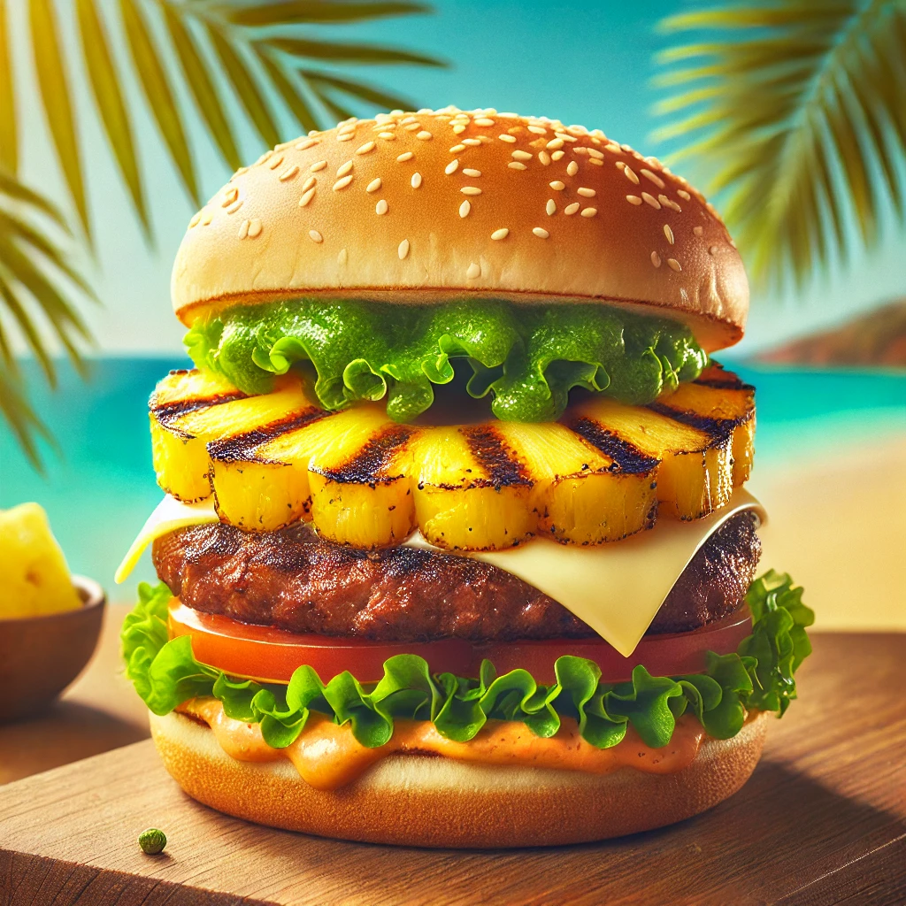

THE BUSTY MERMAID

Island Breeze Burger
Ingredienser og Oppskrift:
Velkommen til Island Breeze Burger – en saftig burger som tar deg med på en smakfull reise til tropiske strender! Denne saftige burgeren er ikke bare et måltid, det er en fest for smaksløkene! Toppet med en frisk, søt og syrlig ananas, og en touch av krydder som gjør den til den perfekte retten på The Busty Mermaid.
Her er hva du trenger for å lage en perfekt Island Breeze Burger:
- 1 stor **saftig biffburger** (sjømat er bra, men en ordentlig burger er alltid en vinner!)
- 1 skive **grillet ananas** (den tropiske smaken som bringer minner om solfylte strender)
- Friske **salatblader** (for den ekstra friskheten som gjør at du føler deg sunn, i det minste på toppen)
- En generøs mengde **cheddarost** (for en kremet, smeltet glede)
- **Chipotle-mayo** (den perfekte kombinasjonen av krydder og kremet tekstur)
Hvordan lage denne burgeren:
- Stek biffburgeren på grillen til den er perfekt tilberedt – saftig på innsiden, litt sprø på utsiden.
- Grill ananasskivene til de får fine grillmerker.
- Legg salatbladene på burgerbrødet og topp med den varme burgeren, deretter legg på cheddarosten slik at den smelter perfekt.
- Smør chipotle-mayo på toppen og legg på den grillet ananasen.
- Sett på lokket, og du har en burger som minner om paradis!
OBS: Denne burgeren kan gjøre deg så glad at du vil danse samba på stranden (eller i baren). Nyt!